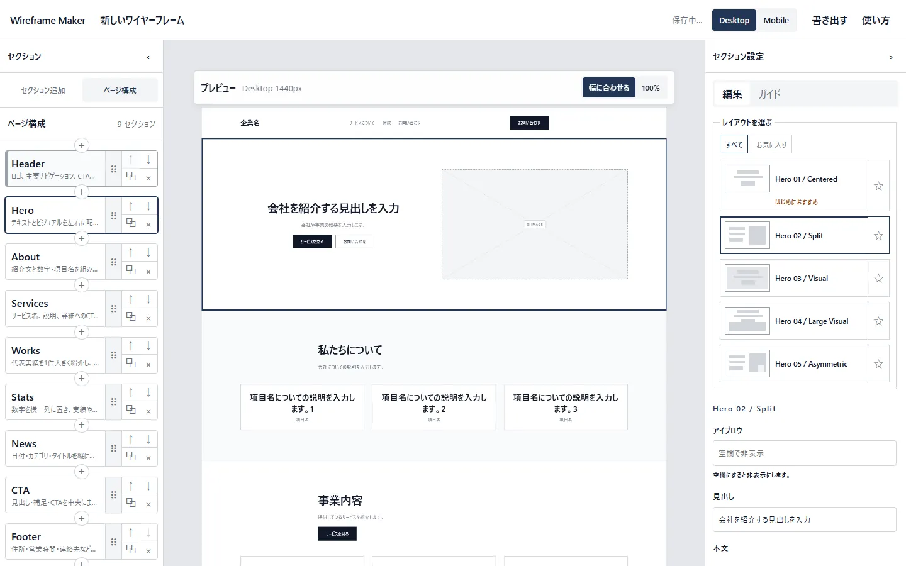
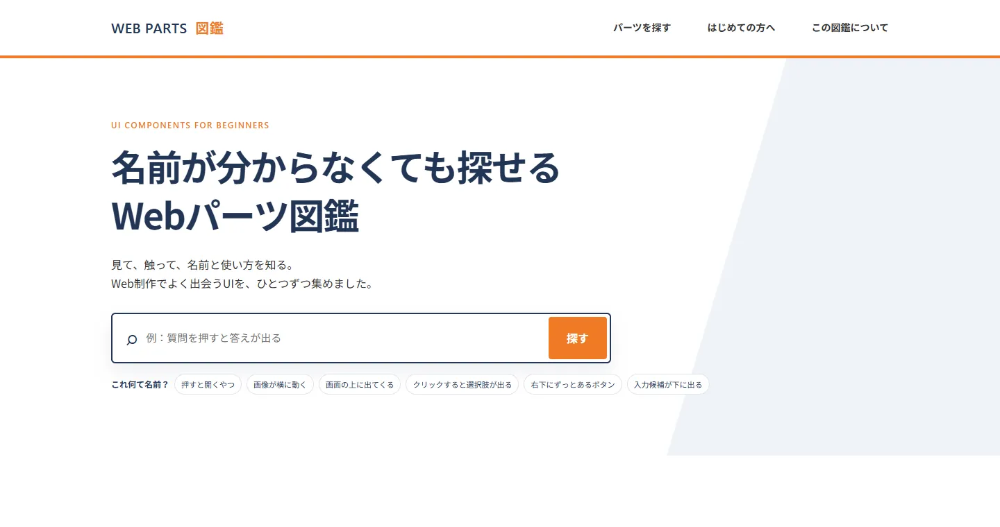
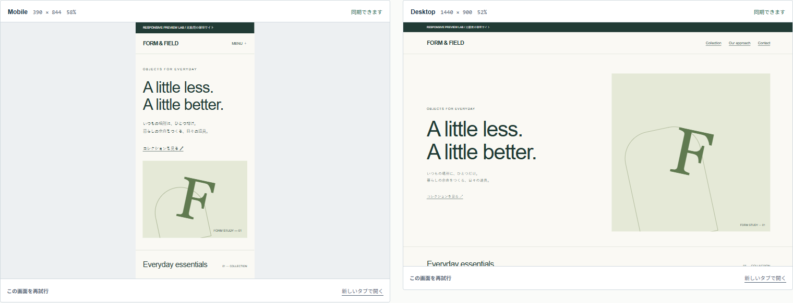

Web制作支援ツール
Aoi Tools
UIパーツを探す、ページ構成を組む、画面幅を比べる。Web制作で使う3つのツールを企画し、機能・UI・操作方法を自分で決め、Codexを使って実装しました。
- 目的
- Web制作の中で繰り返す作業を手軽にする
- 本人
- 企画、対象・機能の決定、UI・操作設計、確認、改善判断
- AI
- Codexによるコード生成、実装、修正支援

制作の作業ごとに、ツールを分ける
制作中には、参考になるUIを探したいとき、ページの構成を試したいとき、画面幅による見え方を比べたいときがあります。それぞれの目的に必要な機能を整理し、3つのツールとして制作しました。
何を作るか、誰が使うか、画面をどう操作するかを自分で決めています。実装後は実際に操作し、使う理由があるか、残すべき機能は何かを基準に改善しています。
3つのツールと、制作時の判断
Webパーツ図鑑 — 見た目や動きから探す
Web制作で使うUIパーツを探すためのツールです。探す目的に合わせて画面と操作を考え、Codexを使って実装しました。

Wireframe Maker — 構成を組み、プレビューで確かめる
ページ構成を組み、プレビューを見ながら調整するツールです。必要な機能、画面構成、操作方法は自分で決め、Codexを使って実装を進めました。
実装にはReact・TypeScript・Vite・Zustandを使用しています。普段のHTML・CSS・軽微なJavaScriptより広い技術領域をCodexの支援で扱い、生成された内容を実画面やコードで確認しました。
Responsive Preview Lab — 日常の確認に必要な2画面へ
当初は6画面を同時に表示する構成を考えていました。実際の利用を考え直し、390pxのMobileと1440pxのDesktopを中心に比較する2画面構成へ変更しました。
表示できる画面数よりも、普段の制作で何を比べるかを優先した判断です。仕様とUIは自分で決め、Codexを使って実装・修正を進めました。

公開したものと、本人が担ったこと
3つのWebツールを企画から公開まで制作しました。Codexを使って実装を進めながら、対象ユーザー、必要な機能、UI、操作方法、改善の採否を自分で判断しています。